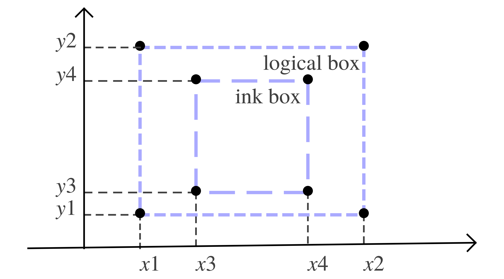

[main]Notes on TeXmacs
[main]Notes on TeXmacs
 [main]Notes on TeXmacs
[main]Notes on TeXmacs
This document describes TeXmacs typesetter. We describe the state of facts as per svn revision r14561 (December 2024, TeXmacs 2.14+). Excerpts from the official documentation are included for completeness.
Still WIP.
|
All TeXmacs documents or document fragments can be thought of as trees. For instance, the tree
typically represents the formula
| (1) |
Each of the internal nodes of a TeXmacs tree is a string symbol and each of the leafs is an ordinary string. A string symbol is different from a usual string only from the efficiency point of view: TeXmacs represents each symbol by a unique number, so that it is extremely fast to test weather two symbols are equal.
Currently, all strings are represented using the universal TeXmacs encoding. This encoding coincides with the Cork font encoding for all characters except “<” and “>”. Character sequences starting with “<” and ending with “>” are interpreted as special extension characters. For example, <alpha> stands for the letter . The semantics of characters in the universal TeXmacs encoding does not depend on the context (currently, cyrillic characters are an exception, but this should change soon). In other words, the universal TeXmacs encoding may be seen as an analogue of Unicode. In the future, we might actually switch to Unicode.
The string leafs either contain ordinary text or special data. TeXmacs supports the following atomic data types:
Either true or false.
Sequences of digits which may be preceded by a minus sign.
Specified using the usual scientific notation.
Floating point numbers followed by a length unit, like 29.7cm or 2fn.
Whereas TeXmacs document fragments can be general TeXmacs trees, TeXmacs documents are trees of a special form which we will describe now. The root of a TeXmacs document is necessarily a document tag. The children of this tag are necessarily of one of the following forms:
This mandatory tag specifies the version of TeXmacs which was used to save the document.
An optional project to which the document belongs.
An optional style and additional packages for the document.
This mandatory tag specifies the body of your document.
Optional specification of the initial environment for the document,
with information about the page size, margins, etc.. The
table is of the form <
An optional list of all valid references to labels in the document. Even though this information can be automatically recovered by the typesetter, this recovery requires several passes. In order to make the behaviour of the editor more natural when loading files, references are therefore stored along with the document.
The table is of a similar form as above. In
this case a tuple is associated to each label. This tuple is either of
the form <
This optional tag specifies all auxiliary data attached to the document. Usually, such auxiliary data can be recomputed automatically from the document, but such recomputations may be expensive and even require tools which are not necessarily installed on your system. The table, which is specified in a similar way as above, associates auxiliary content to a key. Standard keys include bib, toc, idx, gly, etc.
Example
Documents are generally written to disk using the standard TeXmacs syntax (which corresponds to the .tm and .ts file extensions). This syntax is designed to be unobtrusive and easy to read, so the content of a document can be easily understood from a plain text editor. For instance, the formula (1) is represented by
On the other hand, TeXmacs syntax makes style files difficult to read and is not designed to be hand-edited: whitespace has complex semantics and some internal structures are not obviously presented. Do not edit documents (and especially style files) in the TeXmacs syntax unless you know what you are doing.
The TeXmacs format uses the special characters <, |, >, \ and / in order to serialize trees. By default, a tree like
| (2) |
is serialized as
<f|x1|…|xn>
If one of the arguments is a multi-paragraph tree (which means in this context that it contains a document tag or a collection tag), then an alternative long form is used for the serialization. If f takes only multi-paragraph arguments, then the tree would be serialized as
<\f> x1 <|f> … <|f> xn </f>
In general, arguments which are not multi-paragraph are serialized using the short form. For instance, if n=5 and x3 and x5 are multi-paragraph, but not x1, x2 and x4, then (2) is serialized as
<\f|x1|x2> x3 <|f|x4> x5 </f>
The escape sequences \<less\>, \|, \<gtr\> and \\ may be used to represent the characters <, |, > and \. For instance, is serialized as \<alpha\>+\<beta\>.
The document and concat primitives are serialized in a special way. The concat primitive is serialized as usual concatenation. For instance, the text “an important note” is serialized as
an <em|important> note
The document tag is serialized by separating successive paragraphs by double newline characters. For instance, the quotation
Ik ben de blauwbilgorgel.
Als ik niet wok of worgel,
is serialized as
<\quote-env> Ik ben de blauwbilgorgel. Als ik niet wok of worgel, </quote-env>
Notice that whitespace at the beginning and end of paragraphs is ignored. Inside paragraphs, any amount of whitespace is considered as a single space. Similarly, more than two newline characters are equivalent to two newline characters. For instance, the quotation might have been stored on disk as
<\quote-env> Ik ben de blauwbilgorgel. Als ik niet wok of worgel, </quote-env>
The space character may be explicitly represented through the escape sequence “\ ”. Empty paragraphs are represented using the escape sequence “\;”.
The raw-data primitive is used inside TeXmacs for the representation of binary data, like image files included into the document. Such binary data is serialized as
<#binary-data>
where the binary-data is a string of hexadecimal numbers which represents a string of bytes.
In order to understand the TeXmacs document format well, it is useful to have a basic understanding about how documents are typeset by the editor. The typesetter mainly rewrites logical TeXmacs trees into physical boxes, which can be displayed on the screen or on paper (notice that boxes actually contain more information than is necessary for their rendering, such as information about how to position the cursor inside the box or how to make selections).
The global typesetting process can be subdivided into two major parts (which are currently done at the same stage, but this may change in the future): evaluation of the TeXmacs tree using the stylesheet language, and the actual typesetting.
The typesetting primitives are designed to be very fast and they are built-in into the editor. For instance, one has typesetting primitives for horizontal concatenations (concat), page breaks (page-break), mathematical fractions (frac), hyperlinks (hlink), and so on. The precise rendering of many of the typesetting primitives may be customized through the built-in environment variables. For instance, the environment variable color specifies the current color of objects, par-left the current left margin of paragraphs, etc.
The stylesheet language allows the user to write new primitives (macros)
on top of the built-in primitives. It contains primitives for defining
macros, conditional statements, computations, delayed execution,
etc. The stylesheet language also provides a special extern tag which offers you the full power of the
It should be noticed that user-defined macros have two aspects. On the one hand they usually perform simple rewritings. For instance, the macro
<assign|seq|<macro|var|from|to|>>
is a shortcut in order to produce sequences like . When macros perform simple rewritings like in this example, the children var, from and to of the seq tag remain accessible from within the editor. In other words, you can position the cursor inside them and modify them. User defined macros also have a synthetic or computational aspect. For instance, the dots of a seq tag as above cannot be edited by the user. Similarly, the macro
<assign|square|<macro|x|<times|x|x>>>
serves an exclusively computational purpose. As a general rule, synthetic macros are sometimes easier to write, but the more accessibility is preserved, the more natural it becomes for the user to edit the markup.
It should be noticed that TeXmacs also produces some auxiliary data as a byproduct of the typesetting product. For instance, the correct values of references and page numbers, as well as tables of contents, indexes, etc. are determined during the typesetting stage and memorized at a special place. Even though auxiliary data may be determined automatically from the document, it may be expensive to do so (one typically has to retypeset the document). When the auxiliary data are computed by an external plug-in, then it may even be impossible to perform the recomputations on certain systems. For these reasons, auxiliary data are carefully memorized and stored on disk when you save your work.
One major advantage of TeXmacs is that the editor uses general trees as its data format. Like for XML, this choice has the advantages of being simple to understand and making documents easy to manipulate by generic tools. However, when using the editor for a particular purpose, the data format usually needs to be restricted to a subset of the set of all possible trees.
In XML, one uses Data Type Definitions (D.T.D.s) in order
to formally specify a subset of the generic XML format. Such a
D.T.D. specifies when a given document is valid for a
particular purpose. For instance, one has D.T.D.s for
documents on the web (
In TeXmacs, we have started to go one step further than D.T.D.s: besides being able to decide whether a given document is valid or not, it is also very useful to formally describe certain properties of the document. For instance, in an interactive editor, the numerator of a fraction may typically be edited by the user (we say that it is accessible), whereas the URL of a hyperlink is only editable on request. Similarly, certain primitives like itemize correspond to block content, whereas other primitives like sqrt correspond to inline content. Finally, certain groups of primitives, like chapter, section, subsection, etc. behave similarly under certain operations, like conversions.
A Data Relation Description (D.R.D.) consists of a Data Type Definition, together with additional logical properties of tags or document fragments. These logical properties are stated using so called Horn clauses, which are also used in logical programming languages such as Prolog. Contrary to logical programming languages, it should nevertheless be relatively straightforward to determine the properties of tags or document fragments, so that certain database techniques can be used for efficient implementations. At the moment, we only started to implement this technology (and we are still using lots of C++ hacks instead of what has been said above), so a more complete formal description of D.R.D.s will only be given at a later stage.
One major advantage of the use of D.R.D.s is that it is not necessary to establish rigid hierarchies of object classes like in object oriented programming. This is particularly useful in our context, since properties like accessibility, inline-ness, etc. are quite independent one from another. In fact, where D.T.D.s may be good enough for the description of passive documents, more fine-grained properties are often useful when manipulating documents in a more interactive way.
Currently, the D.R.D. of a document contains the following information:
The possible arities of a tag.
The accessibility of a tag and its children.
In the near future, the following properties will be added:
Inline-ness of a tag and its children.
Tabular-ness of a tag and its children.
Purpose of a tag and its children.
The above information is used (among others) for the following applications:
Natural default behaviour when creating/deleting tags or children (automatic insertion of missing arguments and removal of tags with too little children).
Only traverse accessible nodes during searches, spell-checking, etc.
Automatic insertion of document or table tags when creating block or tabular environments.
Syntactic highlighting in source mode as a function of the purpose of tags and arguments.
TeXmacs associate a unique D.R.D. to each document. This D.R.D. is determined in two stages. First of all, TeXmacs tries to heuristically determine D.R.D. properties of user-defined tags, or tags which are defined in style files. For instance, when the user defines a tag like
<assign|hi|<macro|name|Hello name!>>
TeXmacs automatically notices that hi is a macro with one element, so it considers to be the only possible arity of the hi tag. Notice that the heuristic determination of the D.R.D. is done interactively: when defining a macro inside your document, its properties will automatically be put into the D.R.D. (assuming that you give TeXmacs a small amount of free time of the order of a second; this minor delay is used to avoid compromising the reactivity of the editor).
Sometimes the heuristically defined properties are inadequate. For this case, TeXmacs provides the drd-props tag in order to manually override the default properties.
A simple TeXmacs length is a number followed by a length unit, like 1cm or 1.5mm. TeXmacs supports three main types of units:
The length of an absolute unit like cm or pt on print is fixed.
Context-dependent length units depend on the current font or other environment variables. For instance, 1ex corresponds to the height of the “x” character in the current font and 1par correspond to the current paragraph width.
Any nullary macro, whose name contains only lower case roman letters followed by -length, and which returns a length, can be used as a unit itself. For instance, the following macro defines the dm length:
<assign|dm-length|<macro|10cm>>
Furthermore, length units can be stretchable. A stretchable length is represented by a triple of rigid lengths: a minimal length, a default length and a maximal length. When justifying lines or pages, stretchable lengths are automatically sized so as to produce nicely looking layout.
In the case of page breaking, the page-flexibility environment provides additional control over the stretchability of white space. When setting the page-flexibility to , stretchable spaces behave as usual. When setting the page-flexibility to , stretchable spaces become rigid. For other values, the behaviour is linear.
cm
One centimeter.
mm
One millimeter.
in
One inch.
pt
The standard typographic point corresponds to of an inch.
A big point corresponds to of an inch.
The Didôt point equals 1/72 of a French inch, i.e. 0.376mm.
One “pica” equals 12 points.
One “cicero” equals 12 Didôt points.
The font size. When using a 12pt font, 1fs corresponds to 12pt.
The base font size. Typically, when selecting 10 as the font size for your document and when typing large text, the base font size is 10pt and the font size 12pt.
ln
The width of a nicely looking fraction bar for the current font.
sep
A typical separation between text and graphics for the current font, so as to keep the text readable. For instance, the numerator in a fraction is shifted up by 1sep.
The height of the fraction bar for the current font (approximately 0.5ex).
The height of the “x” character in the current font.
The width of the “M” character in the current font.
fn
This is a stretchable variant of 1quad. The default length of 1fn is 1quad. When stretched, 1fn may be reduced to 0.5fn and extended to 1.5fn.
This length defaults to zero, but it may be stretched up till 1fn.
The “base line skip” is the sum of 1quad and par-sep. It corresponds to the distance between successive lines of normal text.
Typically, the baselines of successive lines are separated by a distance of 1fn (in TeXmacs and LaTeX a slightly larger space is used though so as to allow for subscripts and superscripts and avoid a too densely looking text. When stretched, 1fn may be reduced to 0.5fn and extended to 1.5fn.
spc
The (stretchable) width of space character in the current font.
The additional (stretchable) width of a space character after a period.
Box length units can only be used within some special markup elements, such as move, shift, resize, clipped and image. The principal body of this content (e.g. the content being “moved” in the case of move) is typeset as a box. The following lengths units then correspond to the size and the extents of the box.
w
The width of the box.
The height of the box.
l
The logical left  -coordinate
of the box.
-coordinate
of the box.
r
The logical right -coordinate
of the box.
b
The logical bottom  -coordinate
of the box.
-coordinate
of the box.
t
The logical top -coordinate
of the box.
For instance, the code
<move|Hello there||<plus|-0.5b|-0.5t>>
can be used to center Hello there at the base-line.
par
The width of the paragraph. That is the length the text can span. It is affected by paper size, margins, number of columns, column separation, cell width (if in a table), etc.
The height of the main text in a page. In a similar way as par, this length unit is affected by page size, margins, etc.
px
One screen pixel, the meaning of this unit is affected by the shrinking factor.
tmpt
The smallest length unit for internal length calculations by TeXmacs. 1px divided by the shrinking factor corresponds to 256tmpt.
There are three types of lengths in TeXmacs:
A string consisting of a number followed by a length unit.
An abstract length is a macro which evaluates to a length. Such lengths have the advantage that they may depend on the context.
All lengths are ultimately converted into a normalized length,
which is a tag of the form <
TeXmacs represents all texts by trees (for a fixed text, the corresponding tree is called the edit tree). The nodes of such a tree are labeled by standard operators which are listed in Basic/Data/tree.hpp and Basic/Data/tree.cpp. The labels of the leaves of the tree are strings, which are either invisible (such as lengths or macro definitions), or visible (the real text).
The meaning of the text and the way it is typeset essentially depend on the current environment. The environment mainly consists of a relative hash table of type rel_hashmap<string,tree>, i.e. a mapping from the environment variables to their tree values. The current language and the current font are examples of system environment variables; new variables can be defined by the user.
All text strings in TeXmacs consist of sequences of either specific or universal symbols. A specific symbol is a character, different from '\0', '<' and '>'. Its meaning may depend on the particular font which is being used. A universal symbol is a string starting with '<', followed by an arbitrary sequence of characters different from '\0', '<' and '>', and ending with '>'. The meaning of universal characters does not depend on the particular font which is used, but different fonts may render them in a different way.
The language of the text is capable performing a further semantic analysis of a text phrase. At least, it is capable of splitting a phrase up into words (which are smaller phrases) and inform the typesetter about the desired spaces between words and hyphenation information. In the future, additional semantics may be added into languages. For instance, spell checkers might be implemented for natural languages and parsers for mathematical formulas or programming languages.
The TeXmacs typesetter essentially translates a document represented by a tree into a graphical box, which can either be displayed on a graphics device (e.g. the screen or a PDF file). Contrary to a system like LaTeX, the graphical box actually contains much more information than is necessary for a graphical rendering. Roughly speaking, this information can be subdivided into the following categories:
Logical and physical bounding boxes.
A method for graphical rendering.
Miscellaneous typesetting information.
Keeping track of the source subtree which led to the box.
Computing the positions of cursors and selections.
Event handlers for dynamic content.
The logical bounding box is used by the typesetter to position the box with respect to other boxes. A certain amount of other information, such as the slant of the box, is also stored for the typesetter. The physical bounding box encloses the graphical representation of the box. This knowledge is needed when partially redrawing a box in an efficient way.
In order to position the cursor or when making a selection, it is necessary to have a correspondence between logical positions in the source tree and physical positions in the typeset boxes. More precisely, boxes and their subboxes are logically organized as a tree. Boxes provide routines to translate between paths in the box tree and the source tree and to find the path which is associated to a graphical point.
Notice also that, besides a horizontal and vertical position, the physical cursor also contains an infinitesimal horizontal position. Roughly speaking, this infinitesimal coordinate is used to give certain boxes (such as color changes) an extra infinitesimal width.
The abstract box_rep class is defined in src/Typeset/boxes.hpp:
class box_rep: public abstract_struct {
private:
SI x0, y0; // offset w.r.t. parent box
public:
SI x1, y1; // under left corner (logical)
SI x2, y2; // upper right corner (logical)
SI x3, y3; // under left corner (ink)
SI x4, y4; // upper right corner (ink)
path ip; // corresponding inverse path in source tree
// [methods not shown]
}
Coordinates are expressed in the standard internal graphic unit SI which is essentially a fixed float with PIXEL being the unit size and set to 256 (in src/Graphics/rendered.hpp). Cartesian coordinates are relative to a standard frame oriented as in elementary geometry, i.e. the x-axis from left to right and the y-axis from bottom to top.

The field ip represents an inverse path needed to relate the box to the piece of document from which it originates.
In order to implement the correspondence between paths in the source tree and the box tree, one has to face several simultaneous difficulties:
Due to line breaking, footnotes and macro expansions, the correspondence may be non straightforward.
The correspondence has to be reasonably time and space efficient.
Some boxes, such header and footers, or certain results of macro expansions, may not be “accessible”. Although one should be able to find a reasonable cursor position when clicking on them, the contents of this box can not be edited directly.
The correspondence has to be reasonably complete (see the next section).
The first difficulty forces us to store a path in the source tree along with any box (in the box_rep::ip field). In order to save storage, this path is stored in a reversed manner, so that common heads can be shared. This common head sharing is also necessary to quickly change the source locations when modifying the source tree, for instance by inserting a new paragraph.
In order to cope with the third difficulty, the inverse path may start with a negative number, which indicates that the box can not directly be edited (we also say that the box is a decoration). From src/Typeset/boxes.hpp:
#define DECORATION (-1) #define DECORATION_LEFT (-2) #define DECORATION_MIDDLE (-3) #define DECORATION_RIGHT (-4) #define DETACHED (-5)
In this case, the tail of the inverse path corresponds to a location in the source tree, where the cursor should be positioned when clicking on the box. The negative number influences the way in which this is done.
More precisely, we have to deal with three kinds of paths:
These paths correspond to paths in the source tree. Actually, the path minus its last item points to a subtree of the source tree. The last item gives a position in this subtree: if the subtree is a leaf, i.e. a string, it is a position in this string. Otherwise a zero indicates a position before the subtree and a one a position after the subtree.
These are just reverted tree paths (with shared tails), with an optional negative head. A negative head indicates that the tree path is not accessible, i.e. the corresponding subtree does not correspond to editable content. If the negative value is , or , then a zero or one has to be put behind the tree path, depending on the value and the cursor position.
These paths correspond to logical paths in the box tree. Again, the path minus its last item points to a subbox of the main box, and the last item gives a position in this subtree: if the subbox corresponds to a text box it is a position in this text. Otherwise a zero indicates a position before the subbox and a one a position after it. In the case of side boxes, a two and a three may also indicate the position after the left script resp. before the right script.
In order to implement the conversion between the three kinds of paths, every box comes with a reference inverse path ip in the source tree. Composite boxes also come with a left and a right inverse path lip resp. rip, which correspond to the left-most and right-most accessible paths in its subboxes (if there are such subboxes).
The routine:
virtual path box_rep::find_tree_path (path bp);
transforms a box path into a tree path. This routine (which only uses ip) is fast and has a linear time complexity as a function of the lengths of the paths.
The routine:
virtual path box_rep::find_box_path (path p);
does the inverse conversion. Unfortunately, in the worst case, it may be necessary to search for the matching tree path in all subboxes. Nevertheless, in the best case, a dichotomic algorithm (which uses lip and rip), finds the right branch how to descend in a logarithmic time. This algorithm also has a quadratic time complexity as a function of the lengths of the paths, because we frequently need to revert paths.
In order to fulfill the requirement of being a “structured editor”, TeXmacs needs to provide a (reasonably) complete correspondence between logical tree paths and physical cursor positions. This yields an additional difficulty in the case of “environment changes”, such as a change in font or color. Indeed, when you are on the border of such a change, it is not clear a priori which environment you are in.
In TeXmacs, the cursor position therefore contains an
and a coordinate, as well as an additional
infinitesimal -coordinate,
called . A change in
environment is then represented by a box with an infinitesimal width.
Although the -position of the
cursor is always zero when you select using the mouse, it may be non
zero when moving around using the cursor keys. The linear time routine:
virtual path box_rep::find_box_path (SI x, SI y, SI delta);
as a function of the length of the path searches the box path which corresponds to a cursor position. Inversely, the routine:
virtual cursor box_rep::find_cursor (box bp);
yields a graphical representation for the cursor at a certain box path.
The cursor is given by its ,
and coordinates and a
line segment relative to this origin, given by its extremities and . From src/Typeset/boxes.hpp:
struct cursor_rep: concrete_struct {
SI ox, oy; // main cursor position
SI delta; // infinitesimal shift to the right
SI y1; // under base line
SI y2; // upper base line
double slope; // slope of cursor
bool valid; // the cursor is valid
};
The default implementation of the find_cursor method is:
cursor
box_rep::find_cursor (path bp) {
bool flag= bp == path (0);
double slope= flag? left_slope (): right_slope ();
cursor cu (flag? x1: x2, 0);
cu->y1= y1; cu->y2= y2;
cu->slope= slope;
return cu;
}
In a similar way, the routine:
virtual selection box_rep::find_selection (box lbp, box rbp);
computes the selection between two given box paths. This selection comprises two delimiting tree paths and a graphical representation in the form of a list of rectangles.
struct selection_rep: concrete_struct {
rectangles rs;
path start;
path end;
bool valid;
};
The default implementation of find_selection reads:
selection
box_rep::find_selection (path lbp, path rbp) {
if (lbp == rbp)
return selection (rectangles (),
find_tree_path (lbp), find_tree_path (rbp));
else
return selection (rectangle (x1, y1, x2, y2),
find_tree_path (path (0)), find_tree_path (path (1)));
}
A typical stack trace with a breakpoint in the low-level typesetting routines (in this case sqrt_box) looks like:
#0 0x000000010317b254 in sqrt_box(list<int>, box, box, box, font, pencil) #1 0x0000000103270ee4 in concater_rep::typeset_sqrt(tree, list<int>) #2 0x00000001032a73b4 in concater_rep::typeset(tree, list<int>) #3 0x00000001032a9330 in typeset_concat(edit_env, tree, list<int>) #4 0x000000010337c5c4 in typeset_concat_or_table(edit_env, tree, list<int>) #5 0x000000010337d6ec in typeset_stack(edit_env, tree, list<int>, array<line_item>, array<line_item>, stack_border&) #6 0x0000000103215ac4 in typesetter_rep::insert_paragraph(tree, list<int>) #7 0x00000001031ccd78 in bridge_rep::my_typeset(int) #8 0x00000001031cd6d4 in bridge_rep::typeset(int) #9 0x00000001031e9f98 in bridge_document_rep::my_typeset(int) #10 0x00000001031cd6d4 in bridge_rep::typeset(int) #11 0x00000001031d317c in bridge_argument_rep::my_typeset(int) #12 0x00000001031cd6d4 in bridge_rep::typeset(int) #13 0x0000000103212430 in bridge_surround_rep::my_typeset(int) #14 0x00000001031cd6d4 in bridge_rep::typeset(int) #15 0x00000001031e9f98 in bridge_document_rep::my_typeset(int) #16 0x00000001031cd6d4 in bridge_rep::typeset(int) #17 0x0000000103214cf8 in bridge_with_rep::my_typeset(int) #18 0x00000001031cd6d4 in bridge_rep::typeset(int) #19 0x00000001031e2298 in bridge_compound_rep::my_typeset(int) #20 0x00000001031cd6d4 in bridge_rep::typeset(int) #21 0x00000001031e9f98 in bridge_document_rep::my_typeset(int) #22 0x00000001031cd6d4 in bridge_rep::typeset(int) #23 0x0000000103217e80 in typesetter_rep::typeset() #24 0x0000000103218370 in typesetter_rep::typeset(int&, int&, int&, int&) #25 0x000000010321a9e8 in typeset(typesetter_rep*, int&, int&, int&, int&) #26 0x0000000102db9954 in edit_typeset_rep::typeset_sub(int&, int&, int&, int&) #27 0x0000000102db9df8 in edit_typeset_rep::typeset(int&, int&, int&, int&) #28 0x0000000102df6694 in edit_interface_rep::apply_changes() #29 0x000000010311c1e0 in tm_server_rep::interpose_handler() #30 0x0000000103023540 in qt_gui_rep::update()
This gives a good idea how we go from the main entry points relative to the typesetter class, to the low lever routines which produce the actual boxes. In the intermediate steps of the computation an important role is played by the bridge object.
class typesetter_rep {
public:
edit_env& env;
bridge br;
rectangles change_log;
array<brush> old_bgs;
array<page_item> l; // current lines
stack_border sb; // border properties
array<line_item> a; // left surroundings
array<line_item> b; // right surroundings
SI x1, y1, x2, y2;
hashmap<string,tree> old_patch;
bool paper;
public:
typesetter_rep (edit_env& env, tree et, path ip);
void insert_stack (array<page_item> l, stack_border sb);
void insert_parunit (tree t, path ip);
void insert_paragraph (tree t, path ip);
void insert_surround (array<line_item> a, array<line_item> b);
void insert_marker (tree st, path ip);
void local_start (array<page_item>& l, stack_border& sb);
void local_end (array<page_item>& l, stack_border& sb);
void determine_page_references (box b);
box typeset ();
box typeset (SI& x1, SI& y1, SI& x2, SI& y2);
};
In the normal operation of the GUI the typesetting starts at typesetter_rep::typeset(int&, int&, int&, int&):
box
typesetter_rep::typeset (SI& x1b, SI& y1b, SI& x2b, SI& y2b) {
x1= x1b; y1= y1b; x2=x2b; y2= y2b;
box b= typeset ();
// cout << "-------------------------------------------------------------\n";
b->position_at (0, 0, change_log);
change_log= requires_update (change_log);
rectangle r (0, 0, 0, 0);
if (!is_nil (change_log)) r= least_upper_bound (change_log);
array<brush> new_bgs;
array<rectangle> rs;
b->collect_page_colors (new_bgs, rs);
for (int i=0; i<min(N(old_bgs), N(new_bgs)); i++)
if (new_bgs[i] != old_bgs[i])
r= least_upper_bound (r, rs[i]);
old_bgs= new_bgs;
x1b= r->x1; y1b= r->y1; x2b= r->x2; y2b= r->y2;
change_log= rectangles ();
return b;
}
which does some administrative work setting the view boundaries requested by the editor and, when the typesetting is done, performing some accesory computations to determine the new changed region due to changes in the background color of the pages and propagating it up via the reference arguments. The production of the boxes is the job of typesetter_rep::typeset():
box
typesetter_rep::typeset () {
old_patch= hashmap<string,tree> (UNINIT);
l = array<page_item> ();
sb = stack_border ();
a = array<line_item> ();
b = array<line_item> ();
paper = (env->get_string (PAGE_MEDIUM) == "paper");
// Test whether we are doing a complete typesetting
env->complete= br->my_typeset_will_be_complete ();
tree st= br->st;
int i= 0, n= N(st);
if (is_compound (st[0], "show-preamble")) { i++; env->complete= false; }
if (is_compound (st[0], "hide-preamble")) i++;
for (; i<n && env->complete; i++) {
if (is_compound (st[i], "hide-part")) env->complete= false;
if (!is_compound (st[i], "show-part")) break;
}
// Typeset
if (env->complete) {
env->local_aux= hashmap<string,tree> (UNINIT);
env->missing = hashmap<string,tree> (UNINIT);
env->redefined= array<tree> ();
env->touched = hashmap<string,bool> (false);
}
br->typeset (PROCESSED+ WANTED_PARAGRAPH);
pager ppp= tm_new<pager_rep> (br->ip, env, l);
box rb= ppp->make_pages ();
if (env->complete && paper) determine_page_references (rb);
tm_delete (ppp);
// env->complete= false; // moved to edit_typeset_rep::typeset
return rb;
}
Here we setup the typesetting environment and then ask the bridge br to start processing the document. The boxes so obtained require still to be laid out as a sequence of pages via a pager which will be illustrated later on.
The bridge structure is receptive to changes in the document (via the observer pattern) and perform the necessary preparations for the typesetting and the typesetting itself of the subtree which it manages:
class bridge_rep: public abstract_struct {
public:
typesetter ttt; // the underlying typesetter
edit_env& env; // the environment
tree st; // the present subtree
path ip; // source location of the paragraph
int status; // status among above values
hashmap<string,tree> changes; // changes in the environment
array<page_item> l; // the typesetted lines of st
stack_border sb; // border properties of l
link_repository link_env; // loci and links declared inside bridge
public:
bridge_rep (typesetter ttt, tree st, path ip);
inline virtual ~bridge_rep () {}
virtual void notify_assign (path p, tree u) = 0;
virtual void notify_insert (path p, tree u);
virtual void notify_remove (path p, int nr);
virtual void notify_split (path p);
virtual void notify_join (path p);
virtual bool notify_macro (int type, string var, int l, path p, tree u) = 0;
virtual void notify_change () = 0;
virtual void my_clean_links ();
virtual void my_exec_until (path p);
virtual bool my_typeset_will_be_complete ();
virtual void my_typeset (int desired_status);
virtual void exec_until (path p, bool skip_flag= false);
void typeset (int desired_status);
};
It is recursively created by parsing the document tree via make_bridge :
bridge
make_bridge (typesetter ttt, tree st, path ip) {
// cout << "Make bridge " << st << ", " << ip << LF;
// cout << "Preamble mode= " << ttt->env->preamble << LF;
if (ttt->env->preamble)
return make_inactive_bridge (ttt, st, ip);
switch (L(st)) {
case ERROR:
return bridge_auto (ttt, st, ip, error_m, true);
case DOCUMENT:
return bridge_document (ttt, st, ip);
case SURROUND:
return bridge_surround (ttt, st, ip);
case HIDDEN:
return bridge_hidden (ttt, st, ip);
case DATOMS:
return bridge_formatting (ttt, st, ip, ATOM_DECORATIONS);
case DLINES:
return bridge_formatting (ttt, st, ip, LINE_DECORATIONS);
case DPAGES:
return bridge_formatting (ttt, st, ip, PAGE_DECORATIONS);
case TFORMAT:
return bridge_formatting (ttt, st, ip, CELL_FORMAT);
case WITH:
return bridge_with (ttt, st, ip);
case COMPOUND:
return bridge_compound (ttt, st, ip);
case ARG:
return bridge_argument (ttt, st, ip);
case MAP_ARGS:
// FIXME: we might want to merge bridge_rewrite and bridge_eval
// 'map_args' should really be implemented using bridge_rewrite,
// but bridge_eval leads to better locality of updates for 'screens'
return bridge_eval (ttt, st, ip);
case MARK:
case VAR_MARK:
return bridge_mark (ttt, st, ip);
case EXPAND_AS:
return bridge_expand_as (ttt, st, ip);
case EVAL:
case QUASI:
return bridge_eval (ttt, st, ip);
case EXTERN:
case VAR_INCLUDE:
case WITH_PACKAGE:
return bridge_rewrite (ttt, st, ip);
case INCLUDE:
return bridge_compound (ttt, st, ip);
case STYLE_ONLY:
case VAR_STYLE_ONLY:
case ACTIVE:
case VAR_ACTIVE:
return bridge_compound (ttt, st, ip);
case INACTIVE:
return bridge_auto (ttt, st, ip, inactive_m, true);
case VAR_INACTIVE:
return bridge_auto (ttt, st, ip, var_inactive_m, true);
case REWRITE_INACTIVE:
return bridge_rewrite (ttt, st, ip);
case LOCUS:
return bridge_locus (ttt, st, ip);
case HLINK:
case ACTION:
return bridge_compound (ttt, st, ip);
case ANIM_STATIC:
case ANIM_DYNAMIC:
return bridge_eval (ttt, st, ip);
case CANVAS:
return bridge_canvas (ttt, st, ip);
case ORNAMENT:
return bridge_ornament (ttt, st, ip);
case ART_BOX:
return bridge_art_box (ttt, st, ip);
default:
if (L(st) < START_EXTENSIONS) return bridge_default (ttt, st, ip);
else return bridge_compound (ttt, st, ip);
}
}
Default typesetting of the bridge is
void
bridge_rep::my_typeset (int desired_status) {
if ((desired_status & WANTED_MASK) == WANTED_PARAGRAPH)
ttt->insert_paragraph (st, ip);
if ((desired_status & WANTED_MASK) == WANTED_PARUNIT)
ttt->insert_parunit (st, ip);
}
In the current implementation the result of the alternatives here produce the same effect, i.e.: the tree is typesetted in paragraph mode via typeset_stack
array<page_item>
typeset_stack (edit_env env, tree t, path ip,
array<line_item> a, array<line_item> b, stack_border& sb)
{
// cout << "Typeset stack " << t << "\n";
lazy_paragraph par (env, ip);
par->a= a;
par->a << typeset_concat_or_table (env, t, ip);
par->a << b;
par->format_paragraph ();
sb= par->sss->sb;
return par->sss->l;
}
and the generated page_items are appended to the typesetter_rep::l field. Note that the a and b arguments are taken, in this case from the typesetter's, a and b fields.
Let's see how a more specific bridge works. Consider for example bridge_document_rep. Its initialization goes as follows:
bridge_document_rep::bridge_document_rep (typesetter ttt, tree st, path ip):
bridge_rep (ttt, st, ip)
{
initialize ();
}
void
bridge_document_rep::initialize () {
int i, n= N(st);
brs= array<bridge> (n);
for (i=0; i<n; i++)
brs[i]= make_bridge (ttt, st[i], descend (ip, i));
initialize_acc ();
}
Indeed, recursively it creates bridges for its children. Typesetting, on the other hand, is also left to the sub-bridges, but around this, the document bridge takes cares of managing the semantics of typesetter's a and b fields appropriately:
void
bridge_document_rep::my_typeset (int desired_status) {
//cout << INDENT;
if (is_nil (acc)) {
int i, n= N(st);
array<line_item> a= ttt->a;
array<line_item> b= ttt->b;
for (i=0; i<n; i++) {
//cout << "Typesetting " << st[i] << LF;
int wanted= (i==n-1? desired_status & WANTED_MASK: WANTED_PARAGRAPH);
ttt->a= (i==0 ? a: array<line_item> ());
ttt->b= (i==n-1? b: array<line_item> ());
brs[i]->typeset (PROCESSED+ wanted);
}
}
else acc->my_typeset (desired_status);
//cout << UNINDENT;
}
The typesetter's a and b fields are populated by the surround primitive, typesetted by the corresponding bridge:
void
bridge_surround_rep::my_typeset (int desired_status) {
if (corrupted || (N(ttt->old_patch) != 0)) {
hashmap<string,tree> prev_back (UNINIT);
env->local_start (prev_back);
/*
cout << st[0] << "\n";
cout << st[1] << "\n";
cout << "-------------------------------------------------------------\n";
*/
a= typeset_concat (env, st[0], descend (ip, 0));
b= typeset_concat (env, st[1], descend (ip, 1));
env->local_update (ttt->old_patch, changes_before);
env->local_end (prev_back);
corrupted= false;
}
else env->monitored_patch_env (changes_before);
ttt->insert_marker (st, ip);
ttt->insert_surround (a, b);
body->typeset (desired_status);
}
insert_surround takes care of adding the surround material to the current typesetter status in the correct order:
void
typesetter_rep::insert_surround (array<line_item> a2, array<line_item> b2) {
a << a2;
array<line_item> temp_b= b;
b= copy (b2);
b << temp_b;
}
To investigate further: as far as I can see the a,b fields are resetted only in typesetter_rep::typeset and only “augmented” after that, which would seem to lead to a multiple typesetting of those elements. |
Going back to the bridge typesetting mechanisms, here's bridge_eval_rep::my_typeset:
void
bridge_eval_rep::my_typeset (int desired_status) {
if (is_func (st, EVAL, 1))
initialize (env->exec (st[0]));
else if (is_func (st, QUASI, 1))
initialize (env->exec (tree (QUASIQUOTE, st[0])));
else if (is_func (st, ANIM_STATIC) || is_func (st, ANIM_DYNAMIC))
initialize (env->exec (st));
else if (is_func (st, MAP_ARGS))
initialize (env->rewrite (st));
else initialize (tree (ERROR, "bad eval bridge"));
ttt->insert_marker (st, ip);
body->typeset (desired_status);
}
that execute various subtrees in the current environment and then re-create an appropriate bridge for them via initialize:
void
bridge_eval_rep::initialize (tree body_t) {
if (is_nil (body)) body= make_bridge (ttt, attach_right (body_t, ip));
else replace_bridge (body, path (), bt, attach_right (body_t, ip));
bt= copy (body_t);
}
Indeed the eval bridge does not initialize its subtree in the constructor. Execution of trees will be discussed elsewhere.
Another interesting bridge is bridge_formatting_rep, that typesets as:
void
bridge_formatting_rep::my_typeset (int desired_status) {
tree new_format= env->read (v) * st (0, last);
tree old_format= env->local_begin (v, new_format);
if (v != CELL_FORMAT) ttt->insert_marker (st, ip);
if (is_func (st, DATOMS)) {
array<line_item> a, b;
box ab= empty_box (decorate (ip), 0, 0, 0, env->fn->yx);
box bb= empty_box (decorate (ip), 0, 0, 0, env->fn->yx);
a << line_item (CONTROL_ITEM, OP_SKIP, ab, HYPH_INVALID, st (0, N(st)-1));
b << line_item (CONTROL_ITEM, OP_SKIP, bb, HYPH_INVALID, tree (L(st)));
if (v != CELL_FORMAT) ttt->insert_marker (st, ip);
ttt->insert_surround (a, b);
}
body->typeset (desired_status);
env->local_end (v, old_format);
}
It locally modifies the environment (e.g. "atoms-decorations" for the datoms primitive).
I still need to understand what is the purpose of CONTROL_ITEMs. |
The auto bridge implements another part of interesting functionality, the rendering of (inactivated) markup. The bridge_auto_rep it is created by make_bridge in the following cases:
case ERROR:
return bridge_auto (ttt, st, ip, error_m, true);
case INACTIVE:
return bridge_auto (ttt, st, ip, inactive_m, true);
case VAR_INACTIVE:
return bridge_auto (ttt, st, ip, var_inactive_m, true);
and my make_inactive_bridge (used to typeset the preamble):
bridge
make_inactive_bridge (typesetter ttt, tree st, path ip) {
if (is_document (st))
return bridge_document (ttt, st, ip);
else return bridge_auto (ttt, st, ip, inactive_auto, false);
}
and it requires a TeXmacs macro in creation, in the cases above they are:
static tree inactive_auto (MACRO, "x", tree (REWRITE_INACTIVE, tree (ARG, "x"), "recurse*")); static tree error_m (MACRO, "x", tree (REWRITE_INACTIVE, tree (ARG, "x", "0"), "error*")); static tree inactive_m (MACRO, "x", tree (REWRITE_INACTIVE, tree (ARG, "x", "0"), "once*")); static tree var_inactive_m (MACRO, "x", tree (REWRITE_INACTIVE, tree (ARG, "x", "0"), "recurse*"));
and an auto bridge typesets as follows:
void
bridge_auto_rep::my_typeset (int desired_status) {
env->macro_arg= list<hashmap<string,tree> > (
hashmap<string,tree> (UNINIT), env->macro_arg);
env->macro_src= list<hashmap<string,path> > (
hashmap<string,path> (path (DECORATION)), env->macro_src);
string var= f[0]->label;
env->macro_arg->item (var)= st;
env->macro_src->item (var)= ip;
tree oldv= env->read (PREAMBLE);
env->write_update (PREAMBLE, "false");
initialize ();
if (border) ttt->insert_marker (st, ip);
body->typeset (desired_status);
env->write_update (PREAMBLE, oldv);
env->macro_arg= env->macro_arg->next;
env->macro_src= env->macro_src->next;
}
and finally (via the macros) create an inner rewrite bridge:
case REWRITE_INACTIVE:
return bridge_rewrite (ttt, st, ip);
which typesets as follows:
void
bridge_rewrite_rep::my_typeset (int desired_status) {
initialize (env->rewrite (st));
ttt->insert_marker (st, ip);
if (is_func (st, VAR_INCLUDE)) {
url save_name= env->cur_file_name;
url file_name= url_unix (env->exec_string (st[0]));
env->cur_file_name= relative (env->base_file_name, file_name);
env->secure= is_secure (env->cur_file_name);
body->typeset (desired_status);
env->cur_file_name= save_name;
env->secure= is_secure (env->cur_file_name);
}
else body->typeset (desired_status);
}
by calling
tree edit_env_rep::rewrite (tree t);
which on its turns calls
tree edit_env_rep::rewrite_inactive (tree t, tree var);
to rewrite the tree so to typeset it in an inactive way.
Why this level of indirection, from auto bridge to rewrite bridge? |
TODO |
At the lower level the horizontal concatenation of boxes is implemented via the concater object. From src/Typeset/Concat/concater.cpp:
array<line_item>
typeset_concat (edit_env env, tree t, path ip) {
concater ccc= tm_new<concater_rep> (env);
ccc->typeset (t, ip);
ccc->finish ();
array<line_item> a= ccc->a;
tm_delete (ccc);
return a;
}
Its main output is an array of line_item structs. From src/Typeset/Format/line_item.hpp:
class line_item_rep: public concrete_struct {
public:
int type; // type of the line item
int op_type; // operator type for mathematical symbols
box b; // the box
space spc; // separation space
int penalty; // penalty for a linebreak after this line_item
bool limits; // line items has limits
language lan; // language for hyphenating strings
tree t; // for control items
line_item_rep (int type, int ot_type, box b, int penalty);
line_item_rep (int type, int ot_type, box b, int penalty, language lan);
line_item_rep (int type, int ot_type, box b, int penalty, tree t);
~line_item_rep ();
};
the possible types of line items are
#define OBSOLETE_ITEM 0 #define STD_ITEM 1 #define MARKER_ITEM 2 #define STRING_ITEM 3 #define LEFT_BRACKET_ITEM 4 #define MIDDLE_BRACKET_ITEM 5 #define RIGHT_BRACKET_ITEM 6 #define CONTROL_ITEM 7 #define FLOAT_ITEM 8 #define NOTE_LINE_ITEM 9 #define NOTE_PAGE_ITEM 10 #define LSUB_ITEM 11 #define LSUP_ITEM 12 #define RSUB_ITEM 13 #define RSUP_ITEM 14 #define GLUE_LSUBS_ITEM 15 #define GLUE_RSUBS_ITEM 16 #define GLUE_LEFT_ITEM 17 #define GLUE_RIGHT_ITEM 18 #define GLUE_BOTH_ITEM 19
TODO |
From src/Typeset/Format/page_item.hpp:
class page_item_rep: public concrete_struct {
public:
int type; // type of the page item
box b; // the box
space spc; // separation space
int penalty; // penalty for a linebreak after this page_item
array<lazy> fl; // floating objects attached to this item
int nr_cols; // number of columns
tree t; // for page control items
page_item_rep (box b, array<lazy> fl, int nr_cols);
page_item_rep (tree t, int nr_cols);
page_item_rep (int type, box b, space spc, int pen,
array<lazy> fl, int nr_cols, tree t);
};
the possible types of line items are
#define PAGE_LINE_ITEM 0 #define PAGE_HIDDEN_ITEM 1 #define PAGE_CONTROL_ITEM 2 #define PAGE_NOTE_ITEM 3
class stack_border_rep: public concrete_struct {
public:
SI height; // default distance between successive base lines
SI sep; // (~~PAR_SEP) sep-ver_sep is maximal amount of shoving
SI hor_sep; // min. hor. ink sep. when lines are shoved into each other
SI ver_sep; // minimal separation of ink
SI bot; // logical bottom of lines
SI top; // logical top of lines
SI height_before;
SI sep_before;
SI hor_sep_before;
SI ver_sep_before;
space vspc_before, vspc_after;
bool nobr_before, nobr_after;
inline stack_border_rep ():
height (0), sep (0), hor_sep (0), ver_sep (0), bot (0), top (0),
height_before (0), sep_before (0), hor_sep_before (0), ver_sep_before (0),
vspc_before (0), vspc_after (0),
nobr_before (false), nobr_after (false) {}
};
box
typeset_as_stack (edit_env env, tree t, path ip) {
// cout << "Typeset as stack " << t << "\n";
int i, n= N(t);
stacker sss= tm_new<stacker_rep> ();
SI sep = env->get_length (PAR_SEP);
SI hor_sep = env->get_length (PAR_HOR_SEP);
SI ver_sep = env->get_length (PAR_VER_SEP);
SI height = env->as_length (string ("1fn"))+ sep;
SI bot = 0;
SI top = env->fn->yx;
array<SI> swell;
sss->set_env_vars (height, sep, hor_sep, ver_sep, bot, top, swell);
for (i=0; i<n; i++)
sss->print (typeset_as_concat (env, t[i], descend (ip, i)));
n= N(sss->l);
array<box> lines_bx (n);
array<SI> lines_ht (n);
for (i=0; i<n; i++) {
page_item item= copy (sss->l[i]);
lines_bx[i]= item->b;
lines_ht[i]= item->spc->def;
}
tm_delete (sss);
box b= stack_box (ip, lines_bx, lines_ht);
SI dy= n==0? 0: b[0]->y2;
return move_box (ip, stack_box (ip, lines_bx, lines_ht), 0, dy);
}